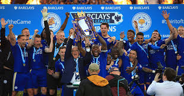

2010 was the first soccer world cup I watched. I remember young German side thrashing Argentina in quarters. There was a great game for 3rd place between Dutch and Uruguay. Ultimately golden generation of players from Spain laid their hands on the trophy by beating the Dutch side in the final.
2014
Everyone remembers 2014 for couple of reasons. One is for the 7-1 drubbing of the host nation in the semifinal and second emergence of Columbian playmaker, James Rodriguez. The Final was cagey affair and was ultimately decided in extra time just like 2010. Germany's long wait for winning another world cup was finally over.
2018
2018 World cup saw some great matches such as France vs Argentina, Spain vs Portugal, Brazil vs Belgium. Some great individual performances from modric, mbappe, coutinho, hazard etc. France won their 2nd title beating resolute Croatian side in the final.
Top moments of the decade

Leicester winning the league against 5000-1 odds